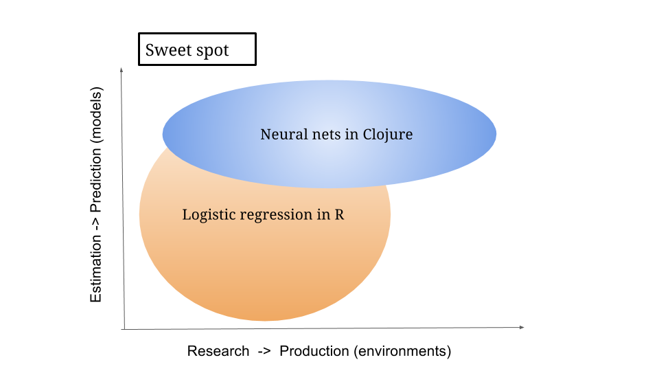
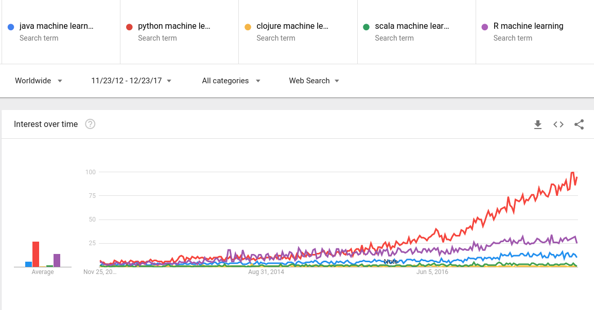

Deep learning in Clojure with Cortex
Kiran Karkera
Created: 2018-01-04 Thu 11:24
Outline
- Context: Clojure, Cortex, Machine Learning
- Overview of Cortex
- How to build a network in Cortex
- Cortex Design
- Recipes for working with Cortex
Context
- Machine learning/data science is an overloaded term

Figure 1: Blind men and the elephant
“Data Scientist (n.): Person who is better at statistics than any software engineer and better at software engineering than any statistician.”
Josh Wills, Director of Engineering at Slack
*Easy things should be easy, and hard things should be possible" Larry Wall
Estimation vs Prediction
Estimation: coming up with values of unknown parameters (in a model)
Prediction: focused on accuracy (and other metrics) of model.
Research vs production use
Exploration (given a dataset, train a classifier, produce a report)
Production (putting a trained model into a production environment)

Why use Clojure for Machine Learning?
- Perception that languages like R/Python are ideal for machine learning.

Data extraction and cleaning takes upto 80% of the time
Clojure is great at data manipulation thanks to its sequence abstractions
Low impedance transition to production
| Library | Niche |
| Gorilla-repl | Notebooks/visualization |
| Storm | Stream processing |
| Onyx | Stream Processing |
| Sparkling/Flambo | Distributed jobs on Spark |
| Datomic | Supports "time travel" over database history |
Machine Learning Digression
Supervised Classification:
When you are a kid and you see different types of animals, your father tells you that this particular animal is a dog. After doing this a few times, you see a new type of dog that you never saw before - you identify it as a dog and not as a cat or a monkey or a potato.

Applications of Supervised Learning
- One of the early successes(1992) for supervised machine learning was reading the zip code in postal mail.
- Dataset called MNIST is a benchmark dataset in machine learning
- Its also the "Hello World" program equivalent in machine learning.

Figure 5: Handwritten digits
- Classifying aspects of human faces such as gender, age, type of expression and skin colour

Features of Cortex
- Deep learning library written in Clojure
- Data centric interface
How to train a simple network
Data
The room occupancy dataset
- Contains measurements of light, temperature, humidity and CO2 of an office room.
- Goal is to predict when the room is occupied.
- Alternative statement: Predict the class (occupied or not) given the observations.

Data ingestion
(def data-vectors (->> "resources/occupancy/datatraining.csv" (slurp) (clojure.string/split-lines) ;; ignore the header row (rest) ;; id, date (map (fn [l] (drop 2 (clojure.string/split l #"," )))) (mapv (fn [m] (mapv #(Double. %) m))))) (take 2 data-vectors)
([23.18 27.272 426.0 721.25 0.00479298817650529 1.0] [23.15 27.2675 429.5 714.0 0.00478344094931065 1.0])
Create training data format
(defn make-feature-vec [data-vectors] (->> data-vectors (mapv (fn[m] {:data (-> m butlast vec) :labels (-> m last vector)})) shuffle)) (->> (make-feature-vec data-vectors) (take 2))
Each instance is a map with keys for data and labels
({:data [22.15 27.245 0.0 586.5 0.0044959713579516], :labels [0.0]} {:data [20.89 23.445 0.0 450.5 0.00357640828064061], :labels [1.0]})
Split the data into train and test
(def train-test-ds (let [ds (make-feature-vec data-vectors) ds-count (count ds) ;;do a 90-10 split into train/test cutoff (int (* 0.9 ds-count)) train-ds (take cutoff ds) test-ds (drop cutoff ds)] [train-ds test-ds]))
Define the layers
- Network is defined as a vector of layers
- input layer take 3 arguments, the x y z dimensions of the input cube
- The :id key specifies the key in the input instance map
;;input layer for an image of size 28 (length) x 28 (breadth) x 3 (depth) (layers/input 28 28 3 :id :data) ;;input layer for room occupancy is 5(inputs) x 1 x 1 (layers/input 5 1 1 :id :data)
;;data instance {:data [22.15 27.245 0.0 586.5 0.0044959713579516], :labels [0.0]}
Network definition
(def description [(layers/input 5 1 1 :id :data) (layers/batch-normalization) (layers/linear 1) (layers/logistic :id :labels)])
Train the network
- Train it for 10 epochs
- One epoch is an iteration where the neural network gets to see each instance in the dataset once
(def trained-occupancy-net (let [[train-ds test-ds] train-test-ds] (train-n description train-ds test-ds ;;run for 10 training epochs :epoch-count 10 )))
| :type | :value | :lambda | :node-id | :argument |
|---|---|---|---|---|
| :mse-loss | 0.03046061750823965 | 1.0 | :labels |
Loss for epoch 10: (current) 0.03046062 (best) 0.03308501 [new best]
Evaluate results
- Evaluate the accuracy (and other metrics) on the test set
- Use the trained network to get predictions
- Given that the last layer is a logistic layer, it generates probabilities
- If the probability is > 0.5, assume that the room is occupied, and vice versa
[(accuracy actual predicted) (f1-score actual predicted 1.0)]
[0.9447852760736196 0.8888888888888891]
Backpropagation

Artifacts
Layers
Parameters
Forward pass
Backward pass
Loss function
Gradient
How to train neural networks (theory)
Write a toy implementation of back propagation
Stack up layers
Sip your coffee and watch the loss function decrease

Reality

This one of a custom implementation of an RNN, graciously contributed by Ray Zhang

Check out this page for nicer loss functions
Cortex Design
Data centric interfaces
- Neural networks are graphs
- TODO insert graph
- A graph is a vector of layers.
- Each layer is a map
(layers/input 2 1 1 :id :data) ;;when eval'd returns ;;[{:type :input, :output-size 2, :output-width 2, :output-height 1, :output-channels 1, :id :data}]
(def description [(layers/input 2 1 1 :id :data) (layers/batch-normalization) (layers/linear 1 :weights [[-0.2 0.2]]) (layers/logistic :id :labels)]) (def g (network/linear-network description)) (-> g :compute-graph keys) ;;returns ;;(:nodes :edges :buffers :streams)
- how does this help?
- Create visual representations of the network (nodes/edges)
(->> g :compute-graph :nodes (mapv (comp :input-dimensions second))) ;;output [[{:channels 1, :height 1, :width 2, :stream :data}] [{:channels 1, :height 1, :width 2, :id :data}] [{:channels 1, :height 1, :width 2, :id :batch-normalization-1}] [{:channels 1, :height 1, :width 1, :id :linear-1}] [{:channels 1, :height 1, :width 1, :id :labels}]]
traversing a network:
- this is a 'moded' operation:
while training:
- backpropogation: forward pass: calculate the output given an input
- backward pass: calculate the gradients (or the correction)
While inference/prediction
- forward pass
Pre-training checks
- check network structure
- number of weights/biases/connections between layers
- number of loss functions and how they are connected
- memory allocation
while-training checks
- find causes for issues like
- no learning or learning too slow. (when no batchnorm layer is used)
- tanh gradients going to 0
- dying relu
- test what individual layers are doing. (e.g. show images from mnist/ cat and dog )
Net surgery
- see example in mnist example core.clj
Post-training checks
- compare performance on multiple metrics
Look under the hood

Summary
When Cortex is a good fit
- Training feedforward networks for classification and regression
- Observing training progress
When Cortex may not be a good fit
- training sequences (which requires a type of network called RNN)
- a Java based alternative is Deeplearning4j
- training networks with newer network structures (e.g. Inception / Capsule networks).
- networks with new types of units (e.g. ? LST/GRU)
- distributed training (usually needed only after a stable network is determined, and you have a lot of data)
- ingesting certain types of pre-trained networks
- there is support for ingesting certain kinds of networks (e.g. Keras/Caffe), but may not work out of the box.
References
- (labeled for noncommercial use with modification) blind men and elephant image
- data science languages by popularity
{kind=link}